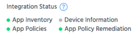
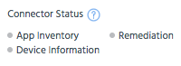

Use the status indicators to view the status of Connector’s access to your EMM host APIs, and Connector's ability to sync with your EMM.
When you have configured Connector, and it has connected to both the EMM (Citrix or MobileIron only) and Appthority, the App Inventory indicator will display green. This means that Connector can access the APIs to sync app inventory.
NOTE: ForAirWatch, app inventory will not be synced automatically when Connector is active. No data will be synced until you select one or more integration options and click Save Changes.
If you do not enable any integration options (in the next step), the other indicators will remain gray.
When you enable integration options and click Save Changes, Connector will check for API access for those options and display green indicators if it can connect. If an indicator displays red, it could mean that your API permissions have not been set correctly in your EMM; contact Appthority Support for troubleshooting.
Note: Connector initial API checks can take up to two minutes. The full sync may take longer to complete.
| AirWatch | MobileIron and XenMobile |
|
 |
 |